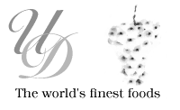

|
|
|

The Ultimate Delicacy
The Ultimate Delicacy, was founded in October of the year two thousand, to fill a gap in the Internet world. This gap was the need for Scott Moore of NOP Design to test the NetCharge.com software system, RocketPay, and demo the NOP Design FreeCart shopping cart. This site is a simple facade, and there are no products actually for sale. If you place an order on this site, you will receive only a thank you page, and no actual product. Because Scott believes in only the best for design, this site has been designed to truly represent a typical E-Commerce client, and has all of the typical functions.
All images used on this site were either developed by Scott Moore of NOP Design, or licensed clipart from Corel® corporation. If you have any questions, problems, or need any additions to this site, please contact Scott Moore at one of the addresses below:
If you would like a copy of this site to load on your server, you may download it here. This file is a ZIP archive. Windows users can unzip this file using the WinZip program. Linux/Unix users use the command line unizip utility to extract this file.
I would like to dedicate this site to my wife Amanda, who has taught me more about spelling, and has been patient on many a late Saturday and Sunday nights working on this site, and many other such projects.
|